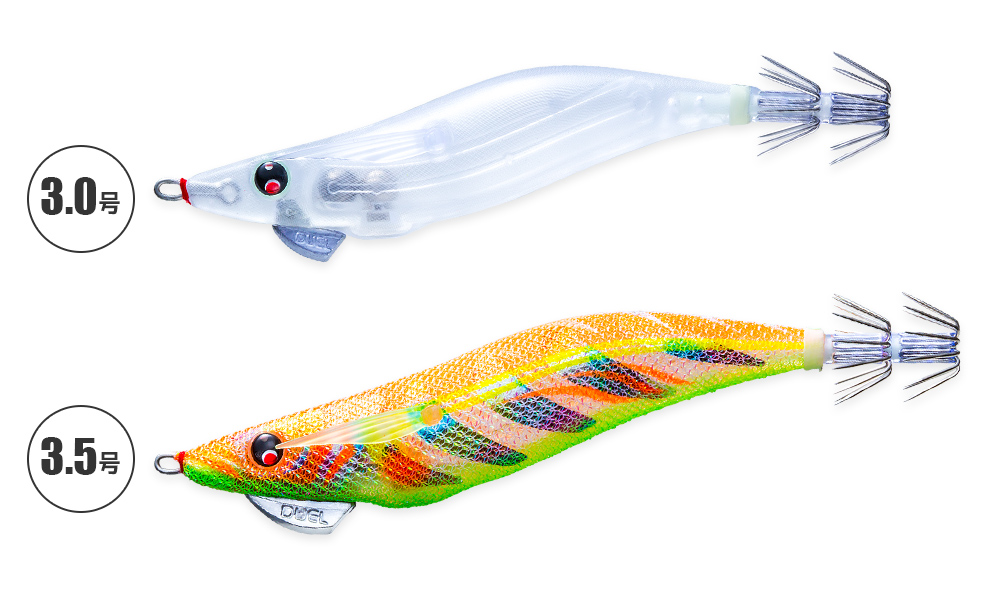
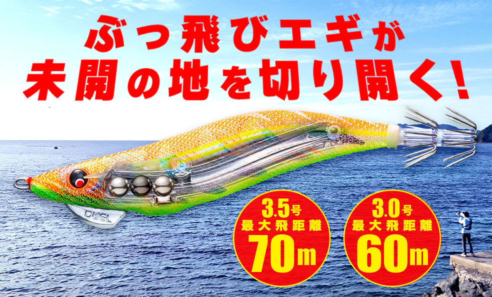
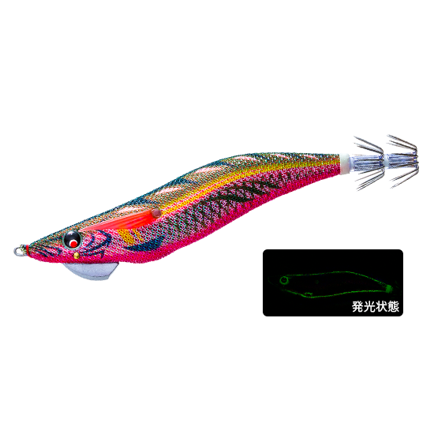
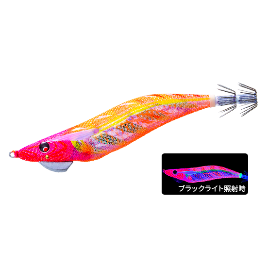
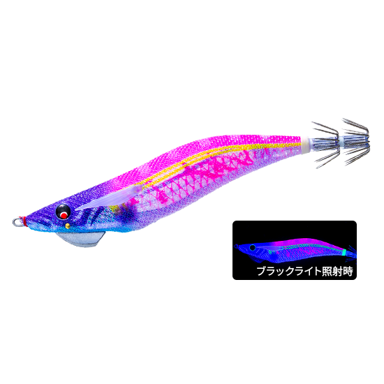
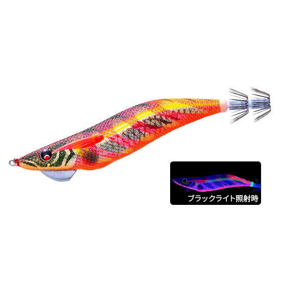
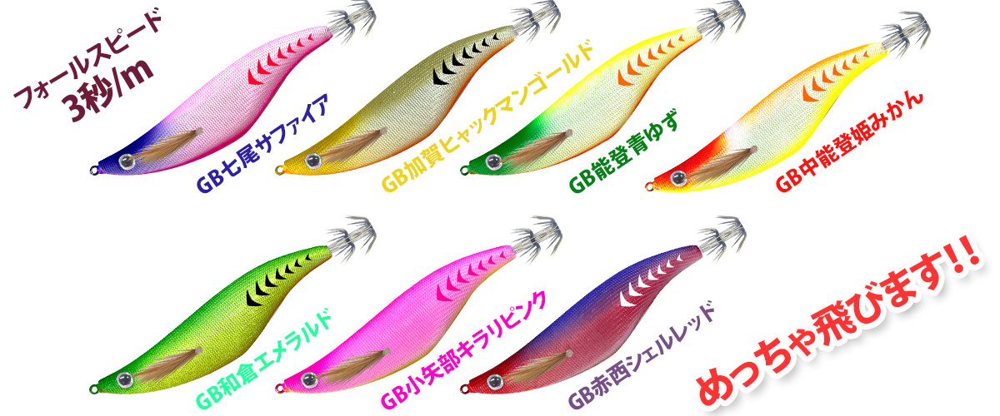
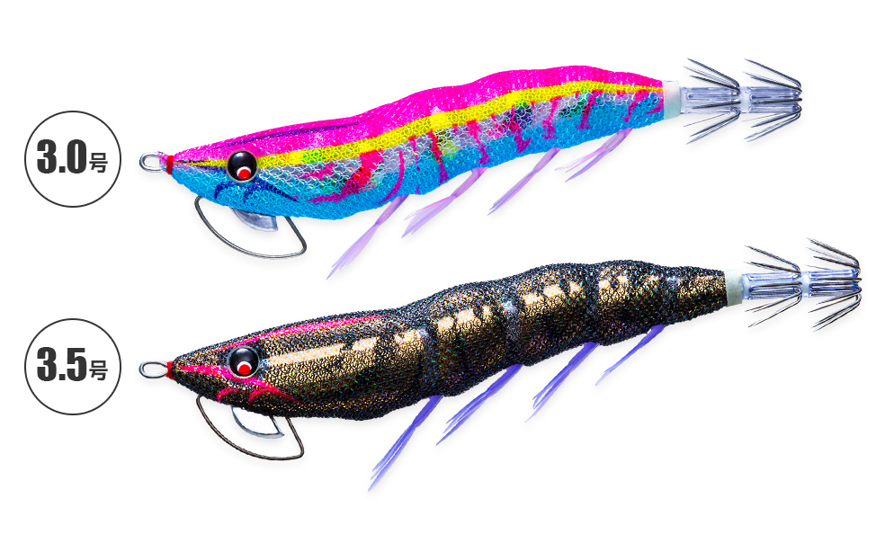

マグQ タングステン
（MAG Q TUNGSTEN）
マグQ タングステンは、DUEL（デュエル）の重心移動エギです。キャッチコピーは「ぶっ飛びエギが未開の地を切り開く！」。
タングステン球とマグネットを組み合わせた「タングステン×マグネット重心移動機構」で、3.5号は公称の最大飛距離70mオーバーという、飛距離に振り切ったエギです。

画像出典:デュエル公式HP
スペック
- メーカー
- DUEL（デュエル）
- タイプ
- 重心移動エギ（ノーマルシンキング）
- サイズ・重さ
- 3.0号 15.5g／3.5号 19g
- 沈下速度
- 約3.5秒/m
- 公称の最大飛距離
- 3.5号 70mオーバー／3.0号 60mオーバー
- カラー
- 全18色
- ターゲット
- アオリイカ
- 価格
- オープン価格
▼今すぐチェック

マグQ タングステンの特徴
最大飛距離70mオーバー！ぶっ飛びエギ
-
タングステン×マグネット重心移動
キャストの時はタングステン球がまっすぐ後ろへ動き、パワーをロスせずに遠くまで飛ぶ。飛行姿勢も安定する。
-
着水後はマグネットでしっかり固定
着水すると球がすぐ前の重心位置に戻り、強力なマグネットで固定される。シャクリやフォールで重心がぶれにくい。
-
3.0号と3.5号の2サイズ
3.5号は最大70mオーバー、3.0号でも最大60mオーバー。秋の小さめのイカから春の大型まで使える。
マグQ タングステンの使い方
基本は、遠投して着底させ、2〜3回シャクってからフォールで抱かせるエギングの基本の流れです。着水したら糸ふけを取り、狙うレンジまでカウントして沈めましょう。
重心移動のエギは、キャストの時にロッド全体にエギの重さを乗せて振り抜くと、球が後ろにしっかり移って、まっすぐ遠くまで飛びます。

画像出典:デュエル公式HP
マグQ タングステンの得意な状況
人がよく入る堤防で、手前のイカがスレている時や、遠浅のサーフ・磯で沖のブレイクを狙いたい時に出番です。向かい風の日も、飛行姿勢が安定しているので届けやすくなります。
ほかの人が届かない沖のポイントまで届けられるのが強み。まだエギを見ていないイカがよく釣れる、遠投の切り札です。
ワンポイント
遠投した先では、着底までのカウントを毎回数えて、少しずつ浅いレンジから探ると、深い場所でも根掛かりを避けながら効率よく探れます。沖のブレイク（かけ上がり）を見つけたら、そこを重点的に通しましょう。
3.0号と3.5号の使い分け
| サイズ | 重さ | 沈下速度 | 公称の |
こんな |
|---|---|---|---|---|
| 3.0号 | 15.5g | 約3.5秒/ |
60mオーバー | 秋の |
| 3.5号 | 19g | 約3.5秒/ |
70mオーバー | 春の |
スペックはデュエル公式HPの記載より。
人気カラー
マグQ タングステンの人気カラーを紹介します。

深場グリーン深い場所や、日中の澄み潮に。

まずめオレンジ朝夕のまずめや、少し濁った時に。

日中ピンク日中の定番のピンク。まず投げたい1本に。

藻場ブラウン藻場まわりで、ナチュラルに見せたい時に。
※全18色。
画像出典:デュエル公式HP
▼今すぐチェック
マグQ タングステンに似ているルアー
-
 エギスタBTB
釣研
詳細はこちら＞
エギスタBTB
釣研
詳細はこちら＞
最大80m超えをうたう、24gの重心移動エギ。
-

飛ぶキラリ ラッキークラフト 詳細はこちら＞マグネットを使わない全重心移動式のエギ。
-

イージーQ マグネットTG（マグパタ） DUEL 詳細はこちら＞同じDUELの重心移動エギ。パタパタフット付き。